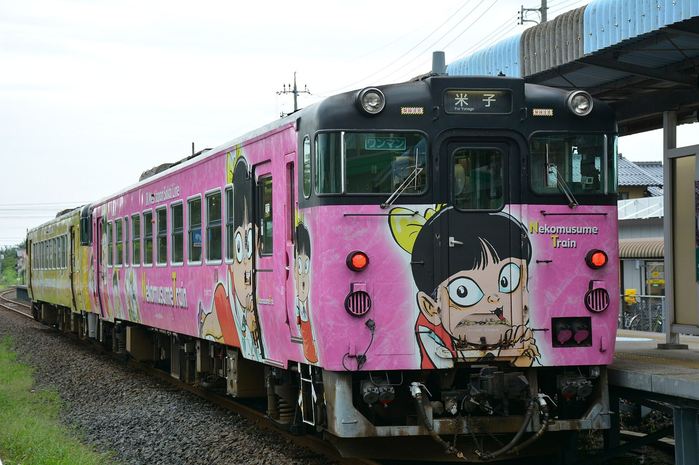
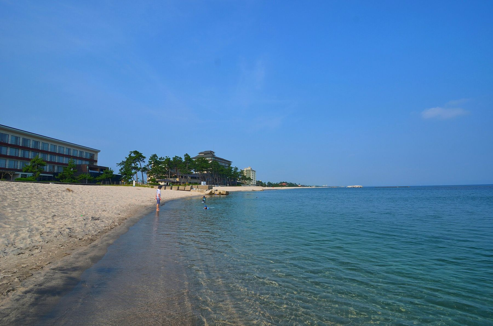
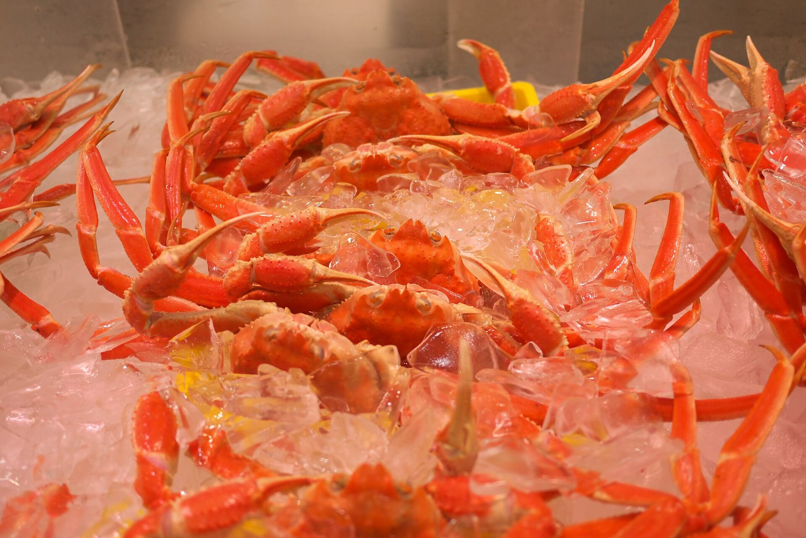
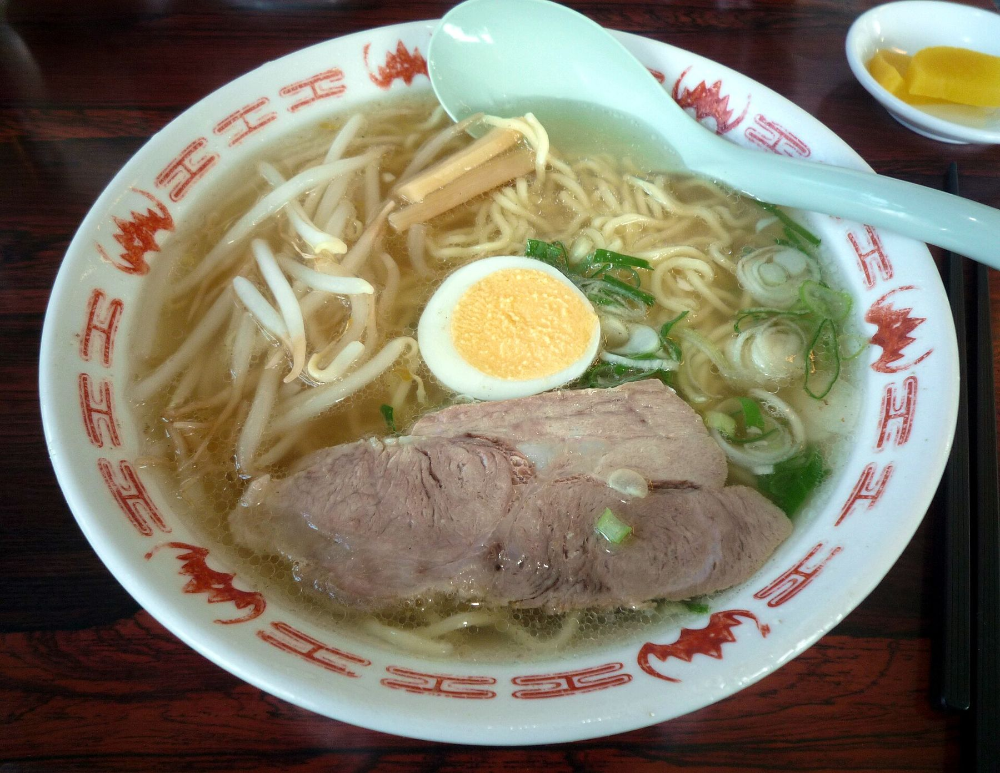
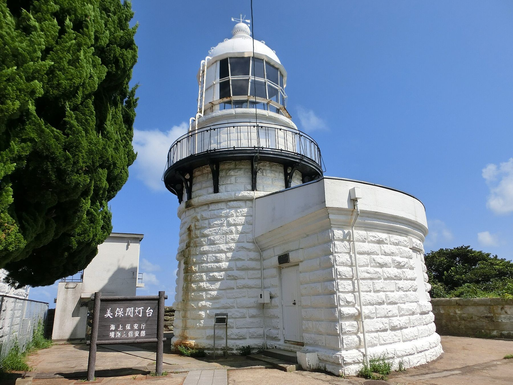

Noto Serif KR · Noto Sans KR · Noto Serif JP · Noto Sans JP (SIL Open Font License 1.1)
조사 기준
2026년 10월 9일. 영업시간·요금·운행은 바뀔 수 있으니 현지에서 다시 확인한다.
웹판
https://mskim5383.github.io/2026-10-yonago-guide/
비매품 · 개인 여행용
CONTENTS
차례
여는 글 · 10.9 FRI
출발 사흘 전, 에디터의 말
땅을 밟는 시간은 49시간 남짓. 그 시간을 가늘고 긴 줄 하나 위에 올려 두기로 했다.
이 글을 쓰는 오늘은 10월 9일 금요일, 출발 사흘 전이다. 오전 11시에 일본 기상청 주간예보가 새로 나왔다. 12일은 비 올 확률 20%, 13일과 14일은 50~60%. 사흘 가운데 하늘을 믿어도 되는 날은 하루뿐이다.
왜 이 사흘인가
비행기는 12일 14:50에 요나고에 내리고 14일 15:50에 다시 뜬다. 렌터카는 없고, 사케와 생맥주는 있다. 걸어서 닿는 곳, 기차가 서는 곳, 택시로 한 번에 가는 곳만 남기고 마쓰에(松江)도 미호노세키(美保関)도 이번에는 뺐다. 그러자 지도 위에 가늘고 긴 땅 하나가 남았다.
이번 여행에 걸린 조건은 몇 가지뿐이었다. 차 없이 다닐 것. 첫날 저녁은 숙소에서 먹을 것. 둘째 날 오전부터 점심까지는 바다에 있을 것. 그날 저녁에는 숙소에서 멀지 않은 곳에서 맛있는 생맥주를 받을 것. 그리고 사케. 시마네(島根)는 “일본술이 처음 빚어진 땅”을, 돗토리(鳥取)는 “간자케의 성지”를 내건 곳이고, 숙소에서 걸어서 몇 분 거리에 1865년부터 술을 빚어 온 양조장이 있다. 바다와 거품과 데운 술. 사흘을 이 해안에 쓰기로 한 이유는 그 정도면 충분했다.
요나고(米子)에서 시작해 17km쯤 뻗어 나간 모래톱, 유미가하마(弓ヶ浜) 반도다. 이름 그대로 활처럼 휘었고, 한쪽에 바다를, 다른 쪽에 나카우미(中海)라는 호수를 끼고 있다. 공항도 기차도 숙소도 다 이 위에 있다. 숙소가 있는 사카이미나토(境港)는 그 맨 끝의 항구다.
신이 당긴 줄
733년에 엮인 『이즈모국 풍토기(出雲国風土記)』에는 야쓰카미즈오미쓰노(八束水臣津野命)라는 신이 “이즈모는 너무 작다”며 바다 건너 네 곳에서 땅을 끌어와 붙였다는 이야기가 있다. 신은 “구니코, 구니코(國來、國來)” 하고 외치며 줄을 당겼다. 마지막으로 끌어온 땅이 미호의 곶이고, 풍토기는 그때 쓴 줄이 요미노시마(夜見嶋), 줄을 단단히 맨 말뚝이 호키국의 히노카미다케(火神岳)라고 적었다. 지금의 유미가하마와 다이센(大山)이다.
숙소는 신이 당긴 줄의 끝에 있고, 꼭대기 층 온천에서는 바다 건너 말뚝이 보인다고 한다. 풍토기는 신이 처음 끌어온 땅이 신라(新羅)의 곶이었다고도 적었다. 바다 건너에서 땅을 끌어온 이야기를, 바다를 건너간 사람이 그 땅 위에서 읽게 된다.
그래서 이번 여행을 그 줄 위의 사흘로 짰다. 첫날은 줄의 끝, 요괴의 항구에서 해 지는 것을 본다. 둘째 날은 줄을 따라 밑동까지 내려가 가이케(皆生)의 해변을 걷고, 요나고성터(米子城跡)에 올라 줄을 내려다본다. 셋째 날은 다시 줄의 끝에서 아침을 맞고, 기타로 열차로 줄 한가운데의 공항까지 간다.
이 책 읽는 법
하루마다 미리 쓴 일기와 일정표를 짝지어 묶었다. 읽을거리, 먹고 마실 곳, 실용 정보는 그 뒤에 모았다.
나는 아직 그곳에 가 보지 않았다. 이 일기들은 조사 자료와 시각표를 펴 놓고 머릿속으로 먼저 걸어 본 기록이다. 일어나지 않은 일을 일어났다고 쓰지 않았고, 맛은 기대로, 풍경은 짐작으로 적었다. 확인하지 못한 사실 옆에는 확인 필요라고 표시했다.
현지의 하루가 일기와 다르면 그쪽이 맞다. 인쇄본에는 일기마다 끝에 빈 줄을, 책 뒤에 날짜별 빈 페이지를 두었다. 미리 쓴 일기가 틀린 자리마다 진짜 일기가 들어간다. 이 책은 돌아오는 비행기 안에서야 다 채워진다.
10월 9일, 에디터
OVERVIEW · 10.12 MON ~ 10.14 WED
사흘 한눈에
숙소 하나, 차 없이 택시와 JR 사카이선(境線)으로 잇는 2박 3일.
이틀 밤 모두 사카이미나토(境港)역 바로 앞 御宿 野乃 境港(오야도 노노 사카이미나토)에서 묵는다. 첫날은 항구 마을을 걷고, 둘째 날은 유미가하마(弓ヶ浜)를 따라 가이케(皆生) 해변과 요나고(米子) 시내까지 내려갔다가 기타로 열차로 올라온다. 셋째 날은 항구에서 아침을 보내고 같은 열차로 공항에 간다. 맑을 것 같은 날은 첫날뿐이라 둘째 날은 두 갈래를 준비했다.
사흘 동선. Day 1 공항 → 사카이미나토, Day 2 사카이미나토 → 가이케 → 요나고성터 → 요나고역 → 사카이미나토, Day 3 사카이미나토 → 공항. 크게 보기
사흘 요약
날
하루의 줄기
먹고 마시기
교통비(대당)
Day 1 10/12(월·공휴일)
14:50 도착 → 택시로 숙소 → 千代むすび → 12층에서 해 질 녘 → 석식 → 그림자극 → 온천
千代むすび 첫 잔, 호텔 석식 뷔페, 夜鳴きそば
택시 약 2,400엔(공항 안내 기준) 또는 JR 190엔
Day 2 10/13(화)
가이케 해안(비안은 夢みなとタワー) → エンヤサンゴ 점심 → 요나고성터 → 요나고 시내 → 16:25 기타로 열차
사카이미나토항의 어선들. 이틀 밤을 묵는 줄의 끝이다.사진 Aimaimyi · CC BY-SA 3.0
DAY 1 · 10.12 MON · 미리 쓴 일기
맑은 날은 하루뿐이라서
줄의 끝에 내려 첫 잔을 받고, 말뚝이 보인다는 꼭대기 층에서 해를 보내고, 요괴들의 그림자 사이로 밤을 걷는다.
출발 사흘 전인 10월 9일에 쓴 일기다. 아직 오지 않은 월요일을 시각표와 지도, 남들이 남긴 후기를 들고 먼저 걸어 보았다. 장면은 넷만 골랐다. 시각과 장소는 조사한 그대로이고, 맛과 풍경은 기대와 짐작이다.
14:50 · 米子鬼太郎空港
착륙하는 순간부터 줄 위다. 요나고 기타로 공항은 유미가하마(弓ヶ浜) 반도 한가운데, 바다와 호수 사이로 길게 뻗은 모래톱 위에 있다. 바퀴가 닿기 직전 창밖으로 보이는 가늘고 긴 땅이 이번 사흘의 무대 전부다. 한쪽은 미호만(美保湾)의 바다, 다른 쪽은 나카우미(中海)라는 호수일 텐데, 내가 앉은 쪽 창에 무엇이 먼저 들어올지는 내려 봐야 안다.
일본은 오늘 스포츠의 날(スポーツの日), 사흘 연휴의 마지막 날이다. 연휴를 보내고 돌아가는 사람들 사이로, 나는 이제 막 도착한다.
16:00 · 千代むすび 岡空本店
千代むすび(치요무스비)는 1865년부터 이 항구에서 술을 빚어 온 양조장이다. 가게 안에 서서 마시는 가쿠우치(角打ち)가 몇 시에 끝나는지는 자료마다 말이 다르다. 그래서 구경은 나중이고 잔이 먼저다.
마시고 싶은 건 고리키(強力)라는 돗토리의 옛 쌀로 빚은 술이다. 갓 빚었을 때는 단단하고 숙성되면 감칠맛이 올라온다고 한다. 몸이 아직 비행기 안에 있는 것 같은 오후에, 그 단단함을 첫 잔으로 받게 될 것이다. 잔을 내려놓고 나오면 바로 미즈키 시게루 로드(水木しげるロード)다. 아직 해가 있어서 길가의 요괴 동상은 그냥 동상이다. 눈을 맞추지 않고 지나간다. 저녁에 다시 올 테니까.
17:10 · 12층 夕凪の湯
꼭대기 층 온천의 이름은 夕凪の湯(유나기노유)다. 유나기는 바닷가에서 낮의 바닷바람이 밤의 뭍바람으로 바뀌는 사이, 바람이 잠깐 멎는 저녁을 말한다. 해 지기 30분 전에 그 이름의 탕에 들어가 바람이 멎는지 기다려 볼 생각이다.
사흘 중 하늘을 믿을 수 있는 날은 오늘뿐이다. 해는 17:37, 서쪽으로 진다. 지도로 보면 다이센(大山)은 그 반대편, 바다 건너 남동쪽에 있다. 해가 서쪽으로 떨어지는 동안 풍토기가 줄을 맨 말뚝이라 부른 산은 마지막 빛을 받고 있을 것이다. 노천탕이 어느 쪽을 향해 있는지는 올라가 봐야 안다. 한쪽만 보인다면 말뚝 쪽이었으면 한다.
욕실에는 휴대폰을 들고 들어갈 수 없으니 이 장면은 사진 없이 남는다. 그래도 괜찮다고 미리 적어 둔다. 내일의 예보는 탕에서 나와 저녁을 먹기 전에 본다.
19:45 · 다시 미즈키 시게루 로드
저녁 뷔페의 노도구로(のどぐろ)와 붉은대게 니기리로 배를 채우고 다시 길로 나온다. 해가 진 뒤부터 22시까지 길바닥에 요괴 그림자극이 비친다. 50종이 넘고, 시간에 따라 색이 바뀌고, 소리에 반응하는 것도 있다고 한다. 오후에 청동으로 서 있던 것들이 이제는 발밑에서 움직인다. 발소리에 무엇이 반응할지 궁금해서 일부러 천천히, 조금 무겁게 걷는다.
역에서 기념관까지 800m를 돌아오면 21시쯤일 것이다. 꼭대기 층에서 오늘 두 번째 탕에 들고, 22시에 1층에서 무료로 내는 夜鳴きそば(요나키소바)를 기다린다. 목욕을 마친 사람을 위한 300엔짜리 생맥주 자판기가 있다는 후기도 읽었다. 정말 있다면 국수가 먼저일지 맥주가 먼저일지는 그때의 내가 정한다. 첫날 밤은 줄의 끝에서 잔다.
DAY 1 · 10.12 MON
요괴의 항구에 내리다
15:30 전후 공항을 나와 사케 한 잔, 꼭대기 층에서 해 지는 바다, 밤에는 요괴 그림자극. 사흘 중 유일하게 맑을 것 같은 날이라 일몰 시각에 맞춰 움직인다.
공휴일(스포츠의 날)이라 JR은 휴일 시각표로 달리고, 요나고 시내 이자카야는 쉬는 곳이 많다. 오늘 동선은 숙소에서 걸어서 닿는 범위에서 끝나고 저녁은 호텔 뷔페로 정해 두었다. 할 일은 셋이다. 첫 잔, 해 질 녘 바다, 요괴 그림자극.
시간표
13:25
인천 출발 RS745에어서울. 터미널은 e-티켓으로 확인
14:50
요나고 기타로 공항(米子鬼太郎空港) 도착입국·세관 뒤 15:30 전후 출구(추정). 1F 세븐일레븐(6:00~22:00) 세븐뱅크 ATM에서 현금, 도착 로비에 엔 환전기
15:30
택시로 숙소5번 승강장, 10~15분, 약 2,400엔(대당, 공항 안내 기준). 15:50을 넘기면 터미널을 나와 오른쪽 도보 5분의 요나고공항역에서 JR 16:15 → 사카이미나토 16:30(190엔). 그것도 놓치면 17:17 → 17:32
15:50
체크인, 짐 두기御宿 野乃 境港. 석식 시간대 예약을 다시 확인
16:00
千代むすび 岡空本店(치요무스비) 가쿠우치술 가게 안에서 서서 마시는 유료 시음. 매장은 17:00까지. 리뷰로는 16:30에도 했고 3종 세트 1,000엔. 공식 마감 시각은 확인 필요
16:45
미즈키 시게루 로드(水木しげるロード)를 조금 걸어 숙소로길 전체는 밤에, 기념관 쪽은 Day 3 아침에 걷는다
17:10
해 질 녘 바다와 다이센12F 대욕장 노천탕. 일몰 17:37(사카이미나토는 1분쯤 이르다). 해 지는 쪽과 다이센이 보이는지는 확인 필요
18:00
기상청 예보 확인17시 발표로 Day 2 안을 정하고(규칙 「사흘 한눈에」7쪽) 프런트에 택시(맑음 8:45, 비 9:00)
18:15
호텔 석식 뷔페1F 港町食堂 海つばき(미나토마치 쇼쿠도 우미쓰바키), 90분제, L.O. 20:30
19:45
그림자극 야간 산책역에서 기념관까지 약 800m. 일몰부터 22:00까지 노면 그림자극과 라이트업
21:00
온천12F 천연온천 대욕장 夕凪の湯(유나기노유)
22:00
夜鳴きそば(요나키소바)1F, 22:00~23:00, 무료
사카이미나토 도보 지도(Day 1·3). 수산물직매센터는 동쪽 밖, 역에서 약 2.2km. 크게 보기
리뷰상 석식에 사시미, 노도구로·붉은대게 니기리, 즉석 덴푸라가 나온다. 목욕 뒤 생맥주 자판기(300엔)가 있다는 리뷰도 있다 확인 필요. 문신이 있으면 입욕 불가, 욕실·탈의실에 휴대폰 반입 금지. 석식 자리를 못 잡으면 숙소 옆 회전스시 ヒトトセ(히토토세, 공휴일 영업, 「먹고 마실 곳」46쪽).
숙소가 이 길의 출발점이다. 오늘은 저녁 뒤에 그림자극을 보러 끝까지 걷고, 낮의 동상은 Day 3 아침 기념관 가는 길에 본다. 중간에 요괴신사(妖怪神社)와 갓파의 샘(河童の泉)이 있다. 10월 그림자극에 계절 한정 그림이 있는지는 확인 필요. 길의 내력은 「요괴가 사는 항구」(30쪽).
DAY 2 · 10.13 TUE · 미리 쓴 일기
줄을 따라 내려가는 날
줄 위의 해변 가이케에서 낮맥주를 마시고, 요나고성터에서 줄을 내려다본 뒤, 기차로 줄을 거슬러 끝으로 돌아온다. 비가 오면 오전의 바다는 탑 위에서 본다.
둘째 날 일기도 10월 9일에 썼다. 앞의 네 장면은 맑은 날 기준이고, 비가 올 때의 하루는 맨 끝에 따로 적었다. 10월 9일의 예보로는 그쪽일 가능성이 더 높다.
9:20 · 皆生 해안
줄의 끝 사카이미나토(境港)에서 밑동 쪽 가이케(皆生)까지, 줄의 길이를 거의 다 택시로 내려왔다. 유미가하마(弓ヶ浜)의 이 해변은 「日本の渚百選」에 들었고, 맑으면 정면에 다이센(大山)이 선다고 한다. 어제 꼭대기 층에서 보았기를 바란 말뚝을, 오늘은 줄 위에 서서 본다.
바다 쪽 기대는 조금 낮춰 둔다. 앞바다에는 침식을 막는 이안제(離岸堤)가 줄지어 서 있다. 남국의 수평선 대신, 바다가 조금씩 풀어 가는 줄을 사람이 붙들어 둔 풍경이다. 블록 뒤로 모래가 불룩하게 쌓인 자리를 찾아 그 끝까지 걸어 볼 생각이다. 신이 당긴 줄이 지금도 조금씩 자라고 깎이는 곳이 거기다. 걷다 지치면 관광센터 앞 무료 족욕에 발을 담근다.
11:00 · エンヤサンゴ
皆生ホテル 1층의 エンヤサンゴ(엔야산고)에는 해변 쪽 오픈 테라스가 있다고 한다. 앉을 수 있다면 생맥주부터 시키고, 바닷바람에 거품이 얼마나 빨리 꺼지는지 지켜볼 생각이다. 저녁에 마실 잔과 비교할 기준점이 될 것이다.
14:30 · 米子城跡
요나고성터(米子城跡)에는 1600년 무렵 천수 두 채가 서 있었고, 지금은 돌담만 남았다. 해발 약 90m 천수대에서는 다이센과 동해와 나카우미(中海)가 360도로 보인다고 한다. 그렇다면 그 사이로 바다와 호수를 가르며 뻗어 나간 가늘고 긴 땅이 보일 것이다. 아침에 택시로 내려온 길, 어제 비행기가 내린 땅, 그 끝의 항구. 신이 당긴 줄을 처음으로 한눈에 보는 자리다. 구름이 낮으면 반쯤만 보일 테고, 반이라도 좋다.
16:25 · 米子駅 0번 승강장
열차 전 40분은 역 근처의 巻き巻き(마키마키)에서 보낸다. 지자케가 50종쯤 있다는 곳이니 고르는 데만 10분은 쓸 것이다. 한 잔만 하고 승강장으로 간다.
요나고역 0번 승강장의 별명은 레이반센(霊番線)이다. 사카이선(境線)의 역에는 하나하나 요괴 이름이 붙어 있다. 출발하는 요나고역은 네즈미오토코(ねずみ男), 50분 뒤에 닿는 사카이미나토역은 기타로(鬼太郎). 성터에서 내려다본 줄을 이번에는 기차로 거슬러 올라간다. 열여섯 개의 요괴 이름을 지나는 동안 17:36에 질 해가 기울기 시작할 것이다.
저녁의 주인공은 거품이다. 碧と風(소라토카제)는 Tabelog에 神泡 인증 표시가 붙은 가게다. 생 プレモル의 첫 모금은 거품부터 닿을 것이다. 안주는 후기에서 본 모사에비(モサエビ) 소금구이. 선도가 빨리 떨어져 현 밖으로 거의 나가지 않는다는 새우다. 여기서만 먹을 수 있는 것을 여기서 먹는다.
비가 오면 · 9:00 夢みなとタワー
비가 오는 날에도 오전은 바다에 있기로 했다. 숙소에서 택시로 10분대라는 유메미나토 타워(夢みなとタワー)는 높이 43m다. 문 여는 시각에 올라가 유리창 너머로 미호만(美保湾)을 본다. 맑은 날이라면 시마네반도와 다이센과 유미가하마가 다 보인다는 자리지만, 오늘은 빗줄기 너머로 줄의 윤곽만 보여도 된다. 바다 위의 비는 위에서 보면 다르게 보일 것이다.
10:27 열차로 줄을 따라 내려가 요나고에서 택시로 가이케, 11:30에 エンヤサンゴ의 실내석에 앉는다. 실내에서도 바다가 보인다니 테라스 대신 유리창 너머로 비 오는 해변을 본다. 오후에는 성터 대신 요나고의 지붕 아래를 다니며 사케 몇 잔을 더 고르고, 같은 16:25 열차로 돌아온다. 비 오는 날에는 기차로 줄을 두 번 지난다. 아침에 내려가고, 저녁에 올라온다.
DAY 2 · 10.13 TUE
유미가하마의 해변에서 요나고로
오전은 바다, 점심은 바다가 보이는 자리의 생맥주, 오후는 성터와 요나고의 사케, 저녁은 항구에서 다시 생맥주. 비가 와도 오전은 바다를 본다.
Day 2 동선. 사카이미나토 → 가이케 → 요나고성터 → 요나고역 → 사카이미나토. 택시 경로는 모식도이고, 돌아오는 길은 사카이선 기타로 열차. 크게 보기
어느 안으로 갈지는 전날(10/12) 17시 기상청 발표로 정한다. 10/13 오전·낮 강수확률 중 높은 값이 30% 이하면 맑음안, 40% 이상이면 비안이다(「사흘 한눈에」7쪽의 결정 규칙). 16:25 열차부터는 두 안이 같다. 챙길 것은 우산·방풍 겉옷, 현금(택시 카드 결제 확인 필요), 족욕용 수건, 碧と風 예약 화면.
맑음안
8:45
택시로 가이케(皆生) 온천 해안25~30분, 대당 약 6,000엔(추정). 전날 프런트에 부탁. 대안: JR 8:05 → 요나고(米子) 8:56 → 택시 약 15분(약 2,000엔, 추정)
9:20
가이케 해안 산책유미가하마(弓ヶ浜, 「日本の渚百選」), 다이센 조망. 관광센터 앞 무료 족욕(운영 시간 확인 필요). 앞바다에 이안제(離岸堤)가 줄지어 있어 남국 같은 수평선은 아니다. 해안의 내력은 「줄 위의 마을들」(33쪽)
11:00
エンヤサンゴ(엔야산고) 점심 + 생맥주12:45까지. 해변 오픈 테라스(10월 운영은 전화 확인). 식후 산책 연장이나 족욕, (선택) 당일 온천 おーゆ・ランド(오유 란도, 450엔, 10:00~23:00)
14:30
택시로 요나고성터(米子城跡)약 15분(추정). 가게에 호출 부탁(안 되면 日ノ丸ハイヤー 米子0859-22-3231). 입구 마스가타(枡形)에서 천수대까지 15~20분
15:45
요나고역 쪽에서 사케 한두 잔巻き巻き(마키마키, 역 426m, 11:00~18:00, 목 휴무)에서 지자케 한 잔 350엔부터, 16:15에 역으로. 쉬려면 혼도리(本通り) 카페 SHIPS나 역 おみやげ楽市(오미야게 라쿠이치). 河田酒店은 성터에서 바로 택시
저녁 碧と風(소라토카제)0차를 하면 18:00. 사카이미나토역 623m. 그 뒤 그림자극 산책, 온천, 22:00 夜鳴きそば
비안
9:00
택시로 夢みなとタワー(유메미나토 타워)10분대(추정). 높이 43m 전망실에서 미호만(美保湾), 날이 걷히면 시마네반도·다이센까지. 9:00~17:00(제3자 정보), 10/13 개관, 입장료 확인 필요. 같은 지구의 大漁市場なかうら(다이료이치바 나카우라)도 화요일에 연다
Tabelog 3.39. 리뷰에 아지후라이, 모사에비 소금구이, 게살 크림고로케가 자주 나온다. 무엇을 어떤 순서로 시킬지는 「한 잔의 거품」(44쪽). 연기가 싫으면 海鮮ふぐ料理 殿(도노, 全席禁煙), 한 잔 더 하려면 やきとり大吉(다이키치, 1:00까지, 10/13 영업 확인 필요). 둘 다 「먹고 마실 곳」(46쪽).
10/12 휴무10/13 영업넷 예약神泡
DAY 3 · 10.14 WED · 미리 쓴 일기
줄의 끝에서 떠나는 날
항구의 아침, 마지막 사케 한 병, 미즈키 시게루의 기념관. 그리고 기타로역에서 떠나는 열차.
마지막 날 일기도 10월 9일에 썼다. 15:50 비행기를 타려면 13:35 열차를 타야 하니, 남은 건 오전 하나다. 예보는 비 올 확률 60%라 일정은 대부분 지붕 아래에 두었다.
8:00 · 境港水産物直売センター
아침은 어제와 같은 1층 식당이나 7시에 여는 항구 식당 魚倉(우오쿠라) 중 하나. 위는 하나다. 그리고 어제는 화요일이라 쉬었던 수산물직매센터로 간다. 줄의 끝에는 항구가 있다. 이틀 밤을 그 곁에서 자고, 떠나는 날 아침에야 안으로 들어간다. 좌판의 붉은대게는 9월에 막 풀린 것들이고, 겨울의 마쓰바가니는 아직 바다에 있다. 게는 눈으로만 사고, 손으로는 건어물을 고른다.
돌아오는 길에 첫날 한 잔을 받은 千代むすび(치요무스비)에서 이번엔 병을 산다. 그날 마신 술과 같은 것을 고를지 다른 것을 고를지는 그 잔의 기억이 정할 것이다.
9:30 · 水木しげる記念館
첫날 저녁 그림자로 본 길을 이번에는 아침에 걷는다. 동상은 그대로인데 이틀 사이에 이름을 몇 개 알게 됐다. 길 끝의 기념관은 2024년에 다시 지었다.
미즈키 시게루(水木しげる)는 이 항구에서 자랐다. 어린 그에게 요괴 이야기를 들려준 사람은 집안일을 거들던 ‘논논바(のんのんばあ)’였다고 한다. 전시는 그 소년 시절에서 시작해 전쟁과 만화가가 되기까지를 지나, 요괴들이 숨어 있다는 동굴로 이어진다. 이틀 밤 발밑을 지나간 요괴들이 이 항구의 한 아이가 부엌에서 들은 이야기에서 나왔다는 걸, 전시실을 따라가며 확인하게 될 것이다. 한국어 음성 가이드를 귀에 꽂고 문 여는 시각에 들어간다. 기념 티켓에는 미즈키의 말 하나가 무작위로 적혀 있다고 한다. 어떤 말이 나올지는 이 일기에 미리 적을 수 없다.
13:35 · 境港駅
마지막 점심은 항구 쪽에서 먹는다. 해산물을 불에 올리는 하마야키(浜焼き)나 어항 회전스시, 아니면 붉은대게 무한리필. 첫날 뷔페에서처럼 접시를 높이 쌓지 않겠다고 다짐해 두지만, 여기서도 지키기는 어려울 것이다.
사카이미나토역의 요괴 이름은 기타로. 16분 뒤, 열차는 베토베토상(べとべとさん)이라는 이름이 붙은 요나고공항역에 선다. 밤길에 발소리만 뒤따라온다는 요괴다. 길 한쪽으로 비켜서서 먼저 가라고 하면 지나간다고 한다. 사흘 동안 내 뒤를 따라온 것도 그런 발소리였을지 모른다. 공항역에서 내리면 한 번 비켜서 볼 생각이다.
15:50 · 이륙
비행기는 반도 한가운데에서 떠오른다. 창가에 앉는다면 활처럼 휜 모래톱이 한 번쯤 발아래로 지나가지 않을까. 구름이 낮으면 아무것도 보이지 않을 것이다. 그때는 줄의 끝에서 밑동까지, 사흘 동안 오르내린 길을 손가락으로 세어 본다. 남은 이야기는 책 맨 뒤의 빈칸에 쓴다.
DAY 3 · 10.14 WED
항구의 아침, 기타로 열차로 공항까지
수산물직매센터에서 아침 장을 구경하고, 마지막 사케를 사고, 미즈키 시게루 기념관을 본 뒤 기타로 열차로 공항에 간다. 대부분 실내라 비 예보에도 크게 흔들리지 않는다.
시간표
6:30
호텔 조식또는 7:00 HATONOVA의 魚倉(우오쿠라)에서 지역 생선 정식. 둘 중 하나만
8:00
직매센터(境港水産物直売センター)숙소에서 택시 약 5분(걸으면 약 30분). 택시는 프런트에 호출을 부탁한다. 건어물·게 구경. 현금
9:00
千代むすび 마지막 사케 쇼핑센터 계산대에 택시 호출을 부탁해 역 앞까지 돌아온다(안 되면 みなとタクシー0859-44-0555)
9:30
미즈키 시게루 기념관(水木しげる記念館)관람 30분~1시간
10:45
체크아웃, 짐 프런트 보관11:00까지
11:15
점심HATONOVA(三光水産·鮨かば·魚倉), 또는 택시(약 5분)로 직매센터 안 さかな塾·海陽亭. 이 경우 12:30 택시로 숙소(아래 「직매센터를 한 번만 가는 변형」)
12:50
숙소에서 짐 찾기HATONOVA에서 숙소까지 약 900m
13:35
JR 사카이선 사카이미나토 → 요나고공항역 13:51기타로 열차, 190엔. 공항역에서 터미널까지 도보 약 5분. 놓치면 다음 14:37(→ 14:53)을 기다리지 말고 바로 택시(약 15분, 약 2,400엔, 공항 안내 기준)
판매점 12곳과 식당 2곳. 센터 안 식당은 境港のさかな塾(사카나주쿠, 10:00~15:00, 붉은대게 무한리필, 현금 위주)과 海陽亭(가이요테이, 10:30~16:00, 紅がに丼, 카드 가능). 수산물의 한국 반입 기준을 확인하지 못해 건어물·가공품 쪽이 안전하다 확인 필요.
1F 에어서울 카운터 → 2F 보안검사 → 세관 → 출국심사 → 대기실. 웹 체크인을 해도 카운터에서 탑승권 발권
시각
마감 15:10. 카운터는 출발 2시간 전에 연다는 비공식 정보가 있다 확인 필요
사케
시내에서 산 병은 카운터에서 위탁 수하물로
면세점
BEE WING3, 출국심사 뒤, 국제선 출발 시간대만. 千代むすび 純米吟醸 強力, 稲田姫, 獺祭 磨き二割三分 등
시설
2F 식당 まるはち屋(마루하치야)·村上水産(무라카미 스이산)·すなば珈琲(스나바 코히)는 「먹고 마실 곳」(47쪽)에. 코인로커 유무 확인 필요
미즈키 시게루의 원화로 만든 스테인드글라스 「妖怪たちの森」이 있다. 남은 동전은 공항 한정 과자로 바꾼다.
FEATURE · 신화
땅을 끌어온 신
1,300년 전 『이즈모국 풍토기』 오우군 조 첫머리에 적힌 구니비키(国引き) 신화. 신이 쥐었던 줄과 박아 둔 말뚝이 이번 사흘의 풍경으로 남아 있다.
요나고 기타로 공항의 활주로는 바다와 호수 사이로 길게 뻗은 모래톱 위에 놓여 있다. 『이즈모국 풍토기(出雲国風土記)』는 이 모래톱을 신이 쥐었던 밧줄이라고 적었다. 10/12(월) 14:50, 비행기 바퀴가 닿는 곳이 그 줄 위다.
이즈모는 너무 작았다
『이즈모국 풍토기』는 지금의 시마네현(島根県) 동부, 옛 이즈모국(出雲国)의 지명 유래와 산물, 전승을 모아 733년에 완성한 문서다. 시마네현은 이 책을 거의 온전한 형태로 전하는 유일한 풍토기라고 소개한다. 구니비키 이야기는 첫 번째 군(郡)인 오우군(意宇郡) 조의 맨 앞에 실렸다. 『고사기(古事記)』에도 『일본서기(日本書紀)』에도 없는, 이즈모에만 전하는 신화다.
주인공 야쓰카미즈오미쓰노(八束水臣津野命)는 자기가 만든 나라를 보고 탄식하는 데서 일을 시작한다.
「八雲立つ出雲の国は、狭布の稚国なるかも。初国小く作らせり。故、作り縫はな」 구름 피어오르는 이즈모는 폭 좁은 천 같은 어린 나라로구나. 처음에 작게 지었으니 기워서 늘리자.
인용의 “狭布(사노)”는 폭 좁은 천이라는 뜻으로, 동서로 가늘고 긴 나라 모양을 빗댄 말로 읽힌다. 신은 바다 건너를 보며 남는 땅이 있는지 살피고, 있으면 떼어 와 이즈모에 기웠다. 모두 네 번이다. 시마네현 문화재과의 해설을 따라 정리하면 이렇다.
떼어 온 곳
기운 곳
줄 · 말뚝
1. 시라기(志羅紀, 신라)의 곶
기즈키노미사키(支豆支の御埼, 히노미사키(日御碕) 일대)
소노노나가하마(薗の長浜) · 사히메야마(佐比賣山, 지금의 산베산(三瓶山))
2. 기타도(北門)의 사키 나라
사다(狭田)의 나라
적히지 않음
3. 기타도의 요나미 나라
구라미(闇見)의 나라
적히지 않음
4. 고시(高志)의 쓰쓰 곶
미호노사키(三穂の埼, 지금의 미호노세키 일대)
요미노시마(夜見嶋, 지금의 유미가하마) · 히노카미다케(火神岳, 지금의 다이센)
“기타도”는 북쪽이라는 뜻이고, 둘째와 셋째 땅이 어디인지는 설이 갈린다. 줄과 말뚝에 이름이 붙은 것은 처음과 마지막, 반도 양 끝의 두 번뿐이다.
가래, 물고기, 밧줄
네 번의 끌어오기는 거의 같은 문장으로 되풀이된다. 소녀의 가슴처럼 넓적한 가래(童女の胸鋤)를 쥐고, 큰 물고기를 찌르듯 땅을 찔러 갈라내고, 세 가닥 꼰 밧줄(三身の綱)을 걸어 “구루야 구루야”, 강배를 끌듯 “모소로 모소로” 당긴다. 그리고 “구니코, 구니코(國來、國來)”, 땅이여 오라, 땅이여 오라.
시마네현 매장문화재조사센터의 이와사키 고헤이(岩崎孝平)는 이 비유들에 고대인의 노동이 들어 있다고 본다. 가래는 토목과 농사, 물고기를 찌르는 동작은 어업, 밧줄로 천천히 당기는 모습은 뭍으로 배를 끌어올리는 일이라는 것이다.
줄과 말뚝은 이웃 나라에 있다
마지막으로 끌려온 땅이 미호노사키, 지금의 미호노세키(美保関) 일대다. 시마네현은 줄로 쓴 요미노시마를 유미가하마(弓ヶ浜) 반도로, 말뚝으로 박은 히노카미다케를 주고쿠(中国) 지방 최고봉 다이센(大山)으로 본다. 유미가하마는 나라 시대에 요미노시마라 불렸고 그때는 섬이었던 것 같다는 설명도 붙어 있다.
풍토기는 말뚝 앞에 굳이 “호키국의(伯耆國なる)”라는 말을 붙였다. 이즈모를 만든 이야기인데 줄과 말뚝은 이웃 나라 호키(伯耆, 지금의 돗토리현 서부)에 있다. 숙소가 있는 사카이미나토(境港)는 그 호키 쪽, 줄의 맨 끝이다. 좁은 사카이 수도(境水道) 건너편이 이즈모의 미호노세키이고, 그 물길이 옛 두 나라(이즈모국과 호키국)의 경계이자 지금의 현 경계다.
네 번의 구니비키. 줄은 유미가하마, 말뚝은 다이센, 마지막으로 끌려온 땅은 미호노세키다. 숙소는 줄의 끝 사카이미나토에 있다. 크게 보기
일을 마친 신은 오우의 숲(意宇の杜)에 지팡이를 꽂고 “오에(意恵)” 하고 외쳤다. 그래서 이 땅을 오우라 부른다. 신화를 지형으로 읽는 해석도 있다. 시마네반도(島根半島)와 본토 사이에 동서로 긴 바닷길이 있었고, 그 서쪽이 히이강(斐伊川) 토사로 메워져 가던 시대의 기억이 신화에 남았다는 것이다(위키백과 일본어판). 유미가하마도 강이 실어 온 모래로 자랐다. 그 모래에 사람이 무엇을 보태고 어떻게 붙들어 왔는지는 「줄 위의 마을들」(33쪽)에서 이어진다.
FEATURE · 만화와 마을
요괴가 사는 항구
셔터가 내려가던 상점가에 1993년 청동 요괴 23체가 섰다. 지금은 178체다. 미즈키 시게루가 자란 항구는 마을 전체가 그의 만화책이 됐다.
해가 지면 사카이미나토(境港)역 앞 보도에 요괴 그림자가 떠오른다. 낮에 청동으로 서 있던 것들이 밤에는 그림자로 걷는다. 역에서 기념관까지 약 800m, 이 길의 이름은 미즈키 시게루 로드(水木しげるロード)다. 1993년 7월 18일 청동상 23체로 문을 열었고, 지금은 178체가 길 양쪽에 서 있다.
논논바의 부엌에서
미즈키 시게루(水木しげる, 본명 무라 시게루 武良茂, 1922~2015)는 오사카에서 태어나 사카이미나토에서 자랐다. 어린 그에게 요괴를 가르쳐 준 사람은 집에 드나들며 부엌일을 거들던 가게야마 후사(景山ふさ), ‘논논바(のんのんばあ)’로 알려진 노파였다. 밤길에 발소리만 뒤따라오는 요괴 베토베토상(べとべとさん)을 만났을 때의 대처법도 논논바에게 들었다고 한다(위키백과 일본어판). 전승으로는 길 한쪽으로 비켜서서 「べとべとさん、お先にお越し」 하고 먼저 보내면 된다.
1943년 징집된 그는 라바울 전선에서 미군 공습으로 왼팔을 잃었다. 돌아와서는 가미시바이(紙芝居) 작가와 대본소(貸本) 만화가를 거쳤다. 1965년 『週刊少年マガジン』에 『墓場の鬼太郎』를 단편으로 처음 실었고, 1967년 정식 연재가 되면서 그해 말 제목을 『ゲゲゲの鬼太郎』로 바꿨다. 첫 TV 애니메이션은 1968년 1월에 방송을 시작했다.
셔터 거리에 선 23체
사카이미나토는 어업으로 일어선 도시고 상점가도 그 덕에 컸다. 1970년대 이후 자동차가 늘고 대형 점포가 들어서면서 손님이 빠져나갔고, 셔터를 내린 가게가 늘었다. 1989년 시는 상점가 보도에 미즈키 작품 속 요괴의 청동상을 세우기로 했다. 미즈키는 동상 제작에 따르는 저작료를 받지 않았다.
개장 직후 동상 일부가 부서지고 도난당한 일이 전국에 보도되면서 오히려 이름이 알려졌다. 1993년 2만 1천 명이던 관광객이 이듬해 28만 1천 명이 됐다. 2004년부터는 한 체에 최저 100만 엔을 내면 동상에 이름을 새겨 주는 스폰서 공모로 수를 늘렸다. 정점은 부인 무라 누노에(武良布枝)의 자전 에세이를 원작으로 한 NHK 연속 TV 소설 『ゲゲゲの女房』가 방송된 2010년이었다. 그해 로드를 찾은 사람은 약 372만 명이다. 미즈키는 2015년 세상을 떠났고, 2024년 구타베(クタベ)가 178번째로 섰다.
기타로 가족만 있는 게 아니다. 이즈모 신화의 큰 뱀 야마타노오로치(八岐大蛇)도 이 길에 있고, 베토베토상 동상은 벌린 입에 동전을 넣고 가는 사람이 많다고 한다.
“게으름뱅이가 되어라(なまけ者になりなさい).” 기념관에 전시된 미즈키 시게루의 말 가운데 하나다.
선로 위의 요괴 이름
JR 사카이선(境線)은 1902년 산인(山陰) 지방 최초의 철도로 개통했다. 사카이미나토항으로 들어오는 철도 건설 자재를 실어 나르려고 놓은 노선이다. 요나고(米子)에서 사카이미나토까지 17.9km, 16역이 유미가하마(弓ヶ浜) 반도를 따라 늘어서 있다.
로드가 열리고 두 달 뒤인 1993년 9월부터 기타로 그림을 입힌 열차가 달렸다. 지금은 기타로, 네즈미오토코, 네코무스메, 메다마오야지, 고나키지지, 스나카케바바 6종이 다닌다. 2005년부터는 16개 역 모두에 요괴 별명이 붙었다. 10/13 16:25 요나고역에서 타면 네즈미오토코역에서 기타로역까지 16개의 요괴 이름을 다 지난다. 10/14에는 기타로역에서 16분, 베토베토상역에서 내린다.

2014년 사카이미나토역의 네코무스메 열차. 열차 그림은 2018년에 바뀌어 지금과 다르다.사진 Cheng-en Cheng · CC BY-SA 2.0
다시 지은 기념관
미즈키 시게루 기념관(水木しげる記念館)은 2003년에 문을 열었고, 재건축을 거쳐 2024년 4월 20일 다시 열었다. 상설전은 사카이미나토의 소년 시절, 전쟁, 만화가가 되기까지 그의 생애를 따라간 뒤 요괴 43체가 숨은 ‘요괴 동굴’과 대표작 원화로 이어진다. 미즈키가 남긴 말 하나를 무작위로 적은 기념 티켓도 나눠 준다.
미즈키의 자전에 따르면 무라(武良)라는 성은 바다 건너 오키(隠岐)에서 비롯된 것으로 여겨진다. 그 오키에도 미즈키 시게루 로드의 청동상 10체가 서 있다(위키백과 일본어판). 줄의 끝 항구에서 요괴들은 다시 바다를 건넌다.
FEATURE · 지리와 마을
줄 위의 마을들
유미가하마 반도 17km. 밑동에는 바다에서 솟은 온천과 상인의 성 아랫마을이, 끝에는 어항이 있다.
둘째 날 동선을 지도에 그리면 선 하나가 된다. 아침엔 반도 밑동의 가이케(皆生) 해안, 오후엔 바로 옆 요나고(米子), 저녁엔 기타로 열차로 반도를 따라 끝의 사카이미나토(境港)로 돌아온다. 『이즈모국 풍토기』가 신의 밧줄이라 부른 이 모래톱은 지질로 보면 강이 실어 온 모래다. 역사로 보면 사람이 굵게 만들었고, 지금은 사람이 붙들고 있는 땅이다.
모래가 쌓은 반도
유미가하마(弓ヶ浜) 반도는 미호만(美保湾)과 나카우미(中海)를 가르는 길이 약 17km, 폭 약 4km의 사주(砂州)다. 히노강(日野川)이 상류에서 실어 온 토사가 조류에 밀려 쌓였다. 나카우미 쪽 안쪽 띠가 수천 년 전에 먼저 자랐고, 미호만 쪽 바깥 띠가 가장 늦게 붙었다는 연구가 있다(위키백과 일본어판).
바깥 띠를 키운 것은 사람의 일이었다. 국토교통성 자료에 따르면 에도 시대에 히노강 상류에서 다타라 제철(たたら製鉄)의 간나나가시(鉄穴流し)가 성행했다. 사철이 섞인 산을 깎아 물에 흘려 무거운 사철만 가려내는 방법이다. 남은 흙과 모래는 강을 타고 바다로 나가 해안을 앞으로 밀어냈다.
바다에서 솟은 온천, 바다에 먹힌 온천
가이케 온천은 1900년에 발견됐다. 해변에서 고기를 잡던 지역 어부가 바다에서 거품이 솟는 것을 우연히 본 것이 시작이라고 요나고시 관광협회는 소개한다. 요나고의 실업가 아리모토 마쓰타로(有本松太郎)가 땅을 정리하고 요나고역에서 전차를 놓아 온천가를 만들었다.
그런데 상류의 간나나가시가 다이쇼(大正) 말기에 끝나자 히노강이 실어 오는 모래가 크게 줄었고, 해안은 거꾸로 깎이기 시작했다. 국토교통성 자료에는 1936년 1호 원천이 무너지고, 1938년 약사당(薬師堂)이 쓸려 가고, 1944년 3호 원천이 무너진 기록이 있다. 가이케 해안은 “해안 침식(海岸侵食)”이라는 말이 처음 쓰인 곳으로도 꼽힌다.
1960년, 가이케 해안은 일본 최초의 국가 직할 해안 공사 구역이 됐다. 1971년부터는 역시 일본 최초로 앞바다에 이안제(離岸堤)를 놓았다. 블록 뒤로 모래가 쌓여 뭍과 이어지는 모래톱(トンボロ)이 생겼고, 해안선은 작은 만이 줄줄이 이어지는 지금의 모습이 됐다. 가이케의 수평선 앞에 블록이 줄지어 있는 까닭이다. 국토교통성은 이를 침식 대책의 성공 사례로 꼽으면서도, 이안제가 바다 조망을 가린다는 점을 과제로 적어 두었다.
바다에서 솟은 온천이, 바다에 먹혀 들어갔다.

가이케 해안. 「日本の渚百選」에 든 유미가하마의 밑동이다.사진 Zai零細系統保護協会 · Public domain
상인의 마을, 요나고
요나고는 에도 시대부터 메이지 시대까지 상인의 마을로 번성했다. 요나고시 관광협회는 “산인의 오사카(山陰の大阪)”로 불릴 만큼 장사로 큰 조카마치(城下町)였다고 소개한다. 흰 흙벽 창고가 늘어선 옛 거리와 성의 바깥 해자였던 가모강(加茂川) 강가, 아홉 절이 나란히 선 데라마치(寺町)가 남아 있다.
요나고성(米子城)은 1591년 무렵 깃카와 히로이에(吉川広家)가 쌓기 시작해 나카무라 가즈타다(中村一忠)가 완성했다. 관광협회는 4층 5중 천수를 자랑한 “산인 제일의 명성(名城)”이었다고 적는다. 메이지 초 성은 헐값에 팔려 해체됐고, 지금은 돌담만 남았다.
국가 사적 요나고성터(米子城跡)의 천수대는 해발 약 90m로, 15~20분 오르면 360도가 열린다. 북쪽으로 시가지와 동해, 서쪽으로 나카우미, 동쪽으로 다이센. 10월 22일 전후의 맑은 아침에는 다이센 꼭대기에서 해가 떠오르는 “다이아몬드 다이센(ダイヤモンド大山)”을 여기서 볼 수 있다고 한다. 이번 일정은 열흘쯤 이르고 시각도 오후다. 대신 시가지 너머로 줄이 어디까지 보이는지 직접 확인해 볼 수 있다 확인 필요.
줄의 끝, 어항
반도 끝의 사카이미나토는 좁은 사카이 수도(境水道)를 사이에 두고 시마네반도와 마주 본다. 바다처럼 보이는 이 물길을 수산청 자료는 1급 하천 히이강(斐伊川)으로 적는다. 에도 시대엔 기타마에부네(北前船)가 드나들었고, 사카이선이 놓인 것도 이 항구 때문이었다(「요괴가 사는 항구」31쪽).
수산청 사업 평가서에 따르면 사카이 어항(境漁港)은 근해 어업의 거점으로, 해마다 10만 톤 안팎을 양륙하며 2020년 양륙량은 일본 5위였다. 주요 어종은 전갱이, 정어리, 게류, 오징어. 붉은대게 양륙은 일본 1위라고 돗토리현은 소개한다. 10/14 아침 수산물직매센터 좌판에 놓일 것들이 이 숫자의 끝이다.
FEATURE · 먹을 것
10월의 바다 식탁
붉은대게는 열렸고 마쓰바가니는 아직 닫혀 있다. 두 계절 사이에 걸린 사흘 동안 산인(山陰)의 바다가 식탁에 무엇을 올리는지 정리했다.
사카이미나토(境港)는 유미가하마(弓ヶ浜)라는 줄의 끝에 매달린 항구다. 줄 끝에는 그물이 걸리고, 그물에는 그 계절의 바다가 걸린다. 10월 중순의 산인 바다는 애매한 때다. 겨울의 주인공은 아직 금어기에 묶여 있고 여름 오징어는 끝물이다. 대신 9월에 막 풀린 것들이 있다. 먹을 수 있는 것과 없는 것을 먼저 갈라 두면 칠판 메뉴 앞에서 덜 헤맨다.
게: 열린 것과 닫힌 것
2026년 베니즈와이가니(紅ズワイガニ, 붉은대게) 어기는 9월 1일에 열려 이듬해 6월 말까지 이어진다. 사카이미나토는 붉은대게 양륙량(水揚げ量) 일본 1위를 내건다. 시마네현 수산과는 이 게를 “즈와이가니보다 살이 달고 값이 싸다”고 설명하고 10~11월 제철 목록에도 올려 두었다.
반대로 이름난 마쓰바가니(松葉ガニ, 수컷 즈와이가니)는 이번 여행에서 생물로 만날 수 없다. 시마네에서 도야마에 이르는 앞바다는 3/21~11/5가 금어기라, 해금은 매년 11월 6일이다. 10월에 “가니(カニ)”라고 적힌 메뉴는 붉은대게이거나 냉동·가공품이다. 게가 없는 계절이 아니라 겨울 게가 아직일 뿐이다.

삶은 붉은대게. 니가타현 데라도마리 어시장에서 찍은 사진으로, 사카이미나토의 모습은 아니다.사진 ひでわく · CC BY-SA 2.1 JP
노도구로, 모사에비
시마네현 수산과의 10~11월 제철 목록 첫 줄은 아카무쓰(アカムツ), 흔히 노도구로(のどぐろ)라 부르는 생선이다. 현 자료는 “1년 내내 지방이 많다”고 쓴다. 여름부터 가을까지는 알을 밴 개체가 섞여 나와 니쓰케(煮付け, 달짝지근한 조림)가 정석이라고 한다.
모사에비(モサエビ, 정식 이름 구로자코에비 クロザコエビ)는 돗토리현 안내에 따르면 어기가 9~5월이라 10월은 해금 직후다. 선도가 빨리 떨어져 현 밖으로 거의 나가지 않는 “현지에서만 먹는 새우”로 소개되고, 단새우보다 단맛이 진해 사시미가 정석이라는 설명이 붙는다. 碧と風의 리뷰에는 모사에비 소금구이가 나온다.
오징어는 끝물, 쥐치는 한창
산인에서 시라이카(白イカ)라 부르는 건 겐사키이카(剣先イカ)다. 원래 6~9월의 여름 오징어인데, 시마네현은 10~11월에도 어획이 많다며 제철 목록에 올렸다. 메뉴에서 빠졌다면 가을이 깊을수록 많이 잡힌다는 아오리이카(アオリイカ)가 자리를 채운다. 같은 목록에서 가와하기(カワハギ, 쥐치)는 “어획 피크”로 적혀 있고, 하가쓰오(ハガツオ)에는 “사시미가 참치 도로(トロ, 기름진 뱃살)보다 낫다”는 현의 설명이 붙어 있다.
칠판의 今日のおすすめ(오늘의 추천)에 쥐치, 하가쓰오, 아오리이카, 노도구로, 모사에비, 붉은대게 중 하나라도 보이면 그것을 고른다. 10월 산인의 제철이다.
바다 옆, 땅의 것
규코쓰 라멘. 돗토리 중서부에서 라멘은 소뼈(牛骨)로 우린 국물이 기본이다. 현청은 현지 사람들이 그게 특별한 줄 모른다고 쓰고, 요나고 관광 담당자는 “감칠맛이 있고 단맛이 남는다”고 표현한다. 이번 동선에서는 碧と風 메뉴 끝의 규코쓰 라멘(990엔)과, 붉은대게 라멘과 함께 규코쓰 라멘도 내는 공항 2층 まるはち屋에서 만난다.
이타다키. 큰 유부에 생쌀과 채소를 채워 육수로 지은 요리다. 고향이 유미가하마(弓ヶ浜) 반도, 구니비키 신화에서 땅을 끌어온 줄 위다. 이름이 다이센(大山) 정상을 닮아서 붙었다는 설도 있다. 한 그릇에 줄과 말뚝이 다 들어간다. 이번 동선에서 파는 곳은 확인 필요.
시지미와 사바샤부.碧と風 메뉴에 신지호(宍道湖)산 시지미(しじみ, 재첩) 된장국(660엔)이 있어, 마쓰에에 가지 않는 이번 일정에서 신지호의 맛을 볼 유일한 자리다. 사카이미나토산 고등어를 얇게 떠 육수에 살짝 담그는 사바샤부(さばしゃぶ)는 요나고에서 시작해 돗토리 식문화로 자리 잡았다고 하지만, 이번 일정에는 넣지 않았다.

돗토리현 중부 가게의 규코쓰 라멘. 돗토리 서부에서는 “그냥 라멘”이다.사진 Flow in edgewise · CC BY 3.0
사흘의 바다 식탁
첫날 저녁 호텔 뷔페에서는 노도구로·붉은대게 니기리와 사시미(리뷰상). 둘째 날 저녁 碧と風에서는 오쓰쿠리(お造り, 사시미) 모둠(1인분 1,540엔), 노도구로 히모노(干物, 말린 생선 구이, 2,530엔), 게살 크림고로케(715엔), 시라이카 덴푸라(1,100엔). 셋째 날은 수산물직매센터 좌판을 보고, 점심에 붉은대게 무한리필(さかな塾)이나 紅がに丼(海陽亭), 하마야키와 어항 회전스시(HATONOVA). 비가 세면 공항 まるはち屋의 붉은대게 라멘. 사 들고 갈 거라면 건어물·가공품 쪽이 안전하다(수산물 반입 기준 확인 필요).
FEATURE · 술
간으로 마시는 땅
시마네는 “일본술이 처음 빚어진 땅”이라 하고, 돗토리는 “데워 마시는 땅”이라 한다. 두 현의 경계 바로 안쪽, 사카이미나토역에서 169m 떨어진 곳에 양조장이 있다.
碧と風(소라토카제)의 사케 메뉴는 술 이름 앞에 산지를 대괄호로 적는다. [境港市], [米子市], [出雲市], [仁多郡], [安来市], [琴浦町]. 돗토리와 시마네가 한 장에 섞여 있다. 두 현은 사케에 대해 각자 큰 말을 하나씩 걸어 두었다. 시마네는 “일본술 발상지”, 돗토리는 “간자케(燗酒, 데운 술)의 성지”. 이번 사흘은 그 두 말 사이, 돗토리 쪽 끝자락에서 묵는다.
시마네: 처음 빚은 땅이라는 주장
근거는 옛 책 두 권이다. 『고사기(古事記)』에서 스사노오(スサノオ)는 “여덟 번 거듭 빚은 독한 술”로 이즈모의 큰 뱀 야마타노오로치를 취하게 한 뒤 물리친다. 다른 한 권이 구니비키 신화가 실린 『이즈모국 풍토기(出雲国風土記)』다. 풍토기는 180명의 신이 사카(佐香) 고을 강가에 모여 술을 빚어 180일 동안 잔치를 벌였다고 적는다. 그 자리에 지금 佐香神社(사카 신사)가 있고, 시마네현 주조조합은 “日本酒発祥の地 島根”를 공식 문구로 쓴다. 신사의 도부로쿠 마쓰리(どぶろく祭)는 매년 10월 13일, 올해는 이 여행의 둘째 날과 겹쳤다. 숙소에서 멀어 일정에는 넣지 않았다(「줄 너머로」57쪽).
돗토리: 데워 마시는 땅
돗토리현은 “燗酒の聖地”를 내건다. 조례가 아니라 현의 홍보 문구이고, 근거로 드는 숫자는 준마이주 비율 약 80%다. 그 뒤에 한 사람이 있다. 돗토리 출신 양조 기술자 우에하라 히로시(上原浩, 2006년 사망)는 1950년 돗토리현 공업시험장으로 옮겨 현 안의 양조장을 지도했다. 가볍고 드라이한 술이 대세이던 때 그는 맛이 풍부한 준마이, 데워도 무너지지 않는 맛을 주장했다. 만화 『나쓰코의 술(夏子の酒)』 속 인물의 모델이기도 하다.
酒は純米、燗ならなお良し 술은 준마이, 데우면 더 좋다. (우에하라 히로시)
현청은 돗토리의 많은 양조장이 손이 많이 가는 기모토(生酛) 방식으로 술을 빚는 데에 우에하라의 영향이 크다고 쓴다. 돗토리 술을 한 줄로 줄이면 준마이, 기모토, 숙성, 그리고 간이다. 2025년 고시된 지리적 표시 GI「鳥取」의 첫 인정주 목록에는 辨天娘(벤텐무스메)의 「純米 強力 燗」이 들어갔다. 이름에 아예 “간”이 붙은 술이다.
데우는 온도도 높다. 日置桜(히오키자쿠라)의 鍛造生酛 強力는 뒷라벨이 도비키리칸(약 55℃ 이상)에 ◎를 주고(2019년 블로그 기록), 梅津酒造(우메쓰주조)의 冨玲(후레이)는 현청 소개에 60~70℃가 적혀 있다.
간 온도 이름표. 히나타칸(약 30℃)에서 도비키리칸(약 55℃ 이상)까지 5℃ 간격이다. 이름과 온도는 일반적인 구분이고 가게마다 조금씩 다르다. 크게 보기
고리키(強力)라는 쌀
돗토리 라벨에서 가장 자주 보게 될 두 글자가 強力(고리키)다. 1915년 순계분리되어 1921년 장려품종이 된 돗토리의 술쌀이다. 키가 커서 기르기 어려운 탓에 전후에 끊겼다가, 1980년대 말 양조장과 농가가 되살렸다. 새 술일 때는 딱딱하고 숙성하면 감칠맛이 강해진다. 숙성과 간에 맞는 쌀이라는 뜻이다. 메뉴나 라벨에 強力가 보이면 데워 달라고 해 볼 만하다.
이번 동선에서 만나는 고리키는 이렇다. 치요무스비의 強力50(현청은 純米吟醸 強力50을 “蔵の代表作”으로 소개한다. 매장 라벨의 등급 표기는 확인 필요)과 純米大吟醸 強力30. 碧と風 메뉴의 強力60 준마이긴조(1합 990엔). 공항 면세점의 千代むすび 純米吟醸 強力와 稲田姫 純米吟醸 強力. 다이센 산록의 맥주 양조장도 이 쌀을 계절 한정 맥주 원료 일부로 쓴다(「한 잔의 거품」44쪽).
10월의 술, 히야오로시
히야오로시(ひやおろし)는 봄에 짠 술을 저장하기 전에 한 번만 화입(火入れ, 가열 살균)하고, 여름 동안 숙성시킨 뒤 가을에 두 번째 화입 없이 내놓는 술이다(히로시마현 설명). 교토 후시미(伏見)의 히야오로시가 부드럽게 익은 가을 술이라면, 산인의 히야오로시는 일본주도 +12에서 +24에 이르는 드라이한 숙성 준마이를 데워 마시는 쪽이다.
요나고의 지자케 상점 河田酒店(가와타 사케텐)은 2026년 9월에 산인 히야오로시로 日置桜「山装ふ」(히오키자쿠라, 일본주도 +14.5), 十旭日 銀杏ラベル(주지아사히, +12, 판매점은 물을 조금 타서 데우기를 권함), 天穏 生詰原酒(텐온), 扶桑鶴 縁の舞(후소즈루)를 올렸다. 둘째 날 오후에 들를 수 있고, 아직 남아 있는지는 확인 필요.
숙소 앞 양조장, 千代むすび
千代むすび(치요무스비)는 1865년 창업한 사카이미나토의 양조장이다. 본점은 미즈키 시게루 로드(水木しげるロード) 위, 숙소에서 걸어서 몇 분이다. 한쪽에 요괴 라벨의 관광용 술(こなき純米 超辛口 같은)이 서고, 다른 쪽에 強力50·強力30 같은 고리키 라인이 선다. 같은 번지에 찻집 겸 사케 바 茶房蔵や(사보 쿠라야, 10:00~16:30)도 있다. 양조 시즌인 10월에 견학 제한이 있는지는 확인 필요.
碧と風 메뉴에서 [境港市]로 적힌 술 넷도 모두 치요무스비의 것이다. ちよむすび上撰(1합 594엔), 強力60 준마이긴조(990엔), 준마이 가라쿠치 じゅんから(935엔), 탄산이 살짝 있는(微発泡) 준마이긴조 しゅわっと空(300ml 1,155엔). 낮에 양조장에서 본 이름을 밤에 잔으로 다시 만난다.
FEATURE · 맥주
한 잔의 거품
碧と風 이름 위에 붙은 “神泡” 표시는 무엇을 인증하는가. 그리고 첫 잔 다음엔 무엇을 시킬까.
둘째 날 저녁에 찾은 건 하나였다. 숙소에서 멀지 않으면서 생맥주가 맛있는 가게. 고른 곳이 사카이미나토역에서 623m 떨어진 碧と風(소라토카제)다. Tabelog의 가게 페이지를 열면 이름 바로 위에 “神泡認定店”이라는 표시가 붙어 있다.
전용 잔에 따른 프레모루 생맥주. 碧と風에서 찍은 사진은 아니다.사진 matobaa · CC BY-SA 2.0
神泡는 무엇을 인증하나
神泡(가미아와)는 산토리가 ザ・プレミアム・モルツ(줄여서 프레모루)의 거품에 붙인 이름이다. 산토리 고객센터는 이 맥주의 원료와 제법에 “따르는 방법(注ぎ方)”이 더해져 만들어지는 곱고 크림 같은 거품이라고 설명한다. 가게 인증에 산토리가 공식으로 쓰는 이름은 둘이다. 품질 관리와 따르는 법을 익힌 “神泡 달인”이 늘 그 거품의 프레모루를 내는 神泡達人店, 그 가운데서도 특히 높은 기준을 넘은 神泡超達人店. “神泡認定店”은 Tabelog의 표시 이름이고, 碧と風가 산토리 기준으로 어느 쪽인지는 확인 필요.
가게 페이지는 전용 잔과 따르는 법까지 품질 관리에 힘쓰고, 고운 거품이 뚜껑 역할을 해 탄산이 빠지는 걸 막는다고 소개한다. 맥주 자체보다 잔과 서버 관리, 따르는 손을 인증하는 표시다. 거품의 두께와 결은 잔이 나오는 순간 눈으로 확인할 수 있다.
碧と風에서 시킬 순서
첫 잔은 생 프레모루 生中(나마추, 중간 잔) 660엔. 생맥주는 이것 한 종류다. 거품부터 본다.
두 번째는 병으로 산인 크래프트. 메뉴의 크래프트 맥주 세 병은 모두 산인(山陰) 지방 것이다. 大山Gビール 페일에일(1,155엔), しじみBLACK(시마네, 1,485엔), 酒粕ブリュー(구라요시 倉吉, 1,485엔). 시지미와 술지게미가 들어갔는지는 라벨의 원재료 표시로 확인한다.
그다음 사케. 지자케 3종 비교 847엔, 또는 숙소 앞 양조장의 強力60 준마이긴조(990엔)를 데워서.
大山Gビール(다이센 G 비루)는 다이센 산록 호키초(伯耆町)의 久米桜麦酒(구메자쿠라 바쿠슈)가 만든다. 1996년에 설립됐고, 지하 150m의 다이센 복류수를 퍼 올려 쓴다. 구니비키의 말뚝, 그 산의 물이다. 기본 라인업은 바이첸, 필스너, 페일에일, 스타우트. 돗토리의 술쌀 強力도 지역 농가와 함께 길러 계절 한정 맥주 원료 일부로 쓰고, 대표작 바이첸은 2011년 World Beer Awards에서 밀맥주 부문 최고상을 받았다고 돗토리현은 소개한다. 碧と風에 있는 건 페일에일이다. 맛은 마셔 보고 적는다.
DIRECTORY
먹고 마실 곳
비·휴무·만석일 때 바로 옮겨 갈 예비 후보. 사카이미나토, 요나고, 공항 순서.
일정에 든 가게(千代むすび, エンヤサンゴ, 河田酒店, 松下酒店, 碧と風, 수산물직매센터, HATONOVA)는 각 Day 일정의 장소 카드에, 사흘 영업 여부는 「여는 날, 쉬는 날, 해와 비」(51쪽)에 있다. 값은 10/9 Tabelog 등에서 본 것이고, 거리는 사카이미나토역(숙소 도보 1분) 기준 직선거리다. 회색 태그는 공휴일 처리나 부정기 휴무 때문에 확정하지 못한 것이다.
사카이미나토 도보 지도. 수산물직매센터는 지도 동쪽 밖(역에서 약 2.2km)이다. 크게 보기
점심 11:30~14:00, 카페 14:00~18:00, 바 18:00~23:30. 휴무 확인 필요
위치
米子市東倉吉町66-1, 혼도리(本通り) 상점가
大山小麦(다이센 밀)과 白バラ牛乳(시로바라 우유)로 만든 수플레 팬케이크. Day 2 오후, 요나고성터에서 내려와 열차 전 30~40분을 쉬는 자리. 역에서 바로 타고 싶으면 요나고역 シャミネ米子 2층 おみやげ楽市(오미야게 라쿠이치, 과자·지역 사케, 영업시간 확인 필요)로 대신한다.
사카이미나토 수산업체가 운영하는 라멘집(Tabelog 3.49). 붉은대게 라멘과 규코쓰 라멘. Day 3에 비가 세면 12:33 열차로 와서 여기서 점심. 같은 층에 村上水産(무라카미 스이산, 정식·덮밥, 수 10:15~20:15, 화 휴무)과 すなば珈琲(스나바 코히, 8:00~17:00)도 있다.
10/12·13·14 영업
NOTES
메모
PRACTICAL · TRANSPORT
기타로 열차와 택시로
렌터카 없이 JR 사카이선(境線)과 택시로 사흘을 잇는다. 열차는 대략 1시간에 1편이라, 탈 편을 미리 정해 두고 놓치면 택시로 바꾼다.
이번 일정에 쓰는 편
JR 서일본 시각표(JR おでかけネット)에서 10/12·13·14 날짜로 확인했다. 굵은 글씨가 기본 편이다.
날
구간 · 시각
쓰임
10/12(월) 휴일 시각표
米子空港16:15 → 境港 16:30
15:50까지 택시를 못 타면. 앞 편 15:13은 입국이 20분 남짓에 끝나야 해 사실상 어렵다
米子空港 17:17 → 境港 17:32
그다음 편
10/13(화) 평일 시각표
境港 8:05 → 米子 8:56
맑음안에서 택시 대신 JR로 갈 때(다음 9:18 → 10:11)
境港10:27 → 米子 11:11
비안(9:00 택시로 夢みなとタワー에 다녀온 뒤). 다음 편은 12:33이다
米子16:25 → 境港 17:15
기본. 앞 편 15:32 → 16:25
米子 17:15 → 境港 18:03
16:25 열차를 놓쳤을 때(그다음 18:03 → 18:52)
10/14(수) 평일 시각표
境港 12:33 → 米子空港 12:49
비가 세서 공항에서 점심을 먹을 때
境港13:35 → 米子空港 13:51
기본. 수속 마감(15:10)까지 70분쯤 남는다
境港 14:37 → 米子空港 14:53
수속 마감에 닿는 마지막 편. 13:35 열차를 놓쳤다면 이 편을 기다리지 말고 바로 택시
10/12은 공휴일, 10/13은 화요일이라는 게 이번 사흘의 함정이다. 영업 여부와 해·날씨를 한데 모았다.
영업 캘린더
10/9 기준 공식 사이트와 Tabelog 표기로 판정했다. O 영업 · X 휴무 · △ 규칙상 영업이나 부정기 휴무가 있음 · ? 미확인 · - 해당 없음. SHIPS·족욕처럼 모두 ?인 곳은 뺐다.
장소
10/12 월
10/13 화
10/14 수
메모
사카이미나토
숙소 석식 海つばき
O
O
-
17:00~21:00
千代むすび 岡空本店
O
O
O
9:00~17:00 무휴
미즈키 시게루 로드 그림자극
O
O
O
일몰~22:00
미즈키 시게루 기념관
O
O
O
9:30~17:00 무휴
松下酒店
△
△
△
9:00~19:30, 부정기 휴무
碧と風
X
O
O
17:30~24:00, 넷 예약만
殿
△
△
△
16:30~22:00, 부정기 휴무
やきとり大吉
?
?
O
월 휴무. 10/12 공휴일 처리, 10/13 대체 휴무 여부 미확인
ヒトトセ
△
△
△
11:00~21:00, 부정기 휴무
수산물직매센터
O
X
O
8:00~16:00경, 현금
夢みなとタワー
O
O
X
9:00~17:00(제3자 정보), 둘째 수 휴관
센터 안 さかな塾·海陽亭
O
X
O
10:00~15:00 / 10:30~16:00
HATONOVA 3곳
O
X
O
魚倉 7:00~, 鮨かば 수 11:00~
가이케 · 요나고
エンヤサンゴ
O
O
O
점심 11:00~15:00. 테라스 운영 확인 필요
米子城跡
O
O
O
무료
巻き巻き
O
O
O
11:00~18:00, 목 휴무
河田酒店
?
O
X
10:00~19:00, 수·일 휴무
桜丸
?
O
O
17:30~22:30, 일 휴무
요나고 기타로 공항
1F 세븐일레븐(ATM)
O
O
O
6:00~22:00
まるはち屋
O
O
O
12:00~20:00, 토 휴무
村上水産
?
X
O
수 10:15~20:15, 화 휴무
해와 날씨
날
일출
일몰
강수확률
기온
10/12(월)
6:11
17:37
20%(신뢰도 A)
16~27℃
10/13(화)
6:12
17:36
돗토리 50%, 시마네 60%(신뢰도 C)
17~28℃
10/14(수)
6:13
17:35
돗토리 60%(신뢰도 C)
14~24℃
일출·일몰은 국립천문대 마쓰에 값으로, 요나고·사카이미나토는 1분쯤 이르다. 해는 거의 정서(방위 약 261°, 정서보다 조금 남쪽)로 진다.
강수확률·기온 모두 기상청 주간예보 10/9 11시 발표(기온은 돗토리 값). 평년값(境 관측소) 10월은 일최고 22.1℃, 일최저 13.8℃라 10/12·13 최고기온은 평년보다 5~6℃, 10/14는 2℃쯤 높다. 낮엔 얇은 긴팔, 아침저녁엔 겉옷. 비 대안은 Day 2 일정(17쪽~)의 비안과 Day 3 일정(23쪽~)의 「비가 세면」.
PRACTICAL · CHECKLIST
떠나기 전에, 내린 뒤에
10/9(금) 기준으로 남은 일, 현금과 면세, 사케를 들고 오는 법, 비상 연락처.
일본 쪽에 전화로 묻거나 예약할 일은 10/9(금) 안에 끝내는 게 편하다. 10/10·11은 주말이고 도착일 10/12은 일본 공휴일이다. 예약 다섯 건은 「사흘 한눈에」(8쪽)의 표에 체크한다.
출발 전
예약: 碧と風(코스 10/11까지, 자리만 10/12 23시까지), 호텔 석식 시간대·짐 보관·10/13 아침 택시, エンヤサンゴ 테라스 확인.
e-티켓: 인천 출발 터미널(T2 가능성이 높다), 위탁 수하물(15kg 1개라는 2차 정보), 시각 변경 공지.
Visit Japan Web 등록. 요나고에서 입국 QR을 쓰는지는 확인하지 못했다 확인 필요. 기내에서 종이 세관 신고서도 쓴다.
엔화: 동전과 1,000엔권을 넉넉히. IC카드(ICOCA·Suica 등)가 있으면 사카이선에서 쓴다.
짐: 우산이나 우비, 방풍 겉옷, 덜 미끄러운 신발, 사케 병 보호재(버블랩·와인 슬리브). 숙소 온천은 문신이 있으면 입욕 불가.
도착한 뒤
10/12 공항 1F 세븐일레븐 ATM에서 현금. 15:50까지 택시를 못 타면 JR 16:15발.
일본 면세(소비세): 이번 여행은 현행 방식이다. 면세 점포에서 계산할 때 바로 세금을 뺀다(같은 점포 하루 5,000엔 이상, 여권 필요). 환급식 전환은 2026년 11월 1일 구매분부터라 이번엔 해당 없다.
한국으로 들고 오는 술과 생선
주류 면세: 1인 2L·US$400 이내(2025년 3월 21일부터 병 수 제한 폐지, 둘 다 넘지 않아야 한다). 기본 면세 한도(US$800)와는 별도로 계산한다(언론·면세점 안내 기준). 관세청 원문은 확인 필요. 720ml 두 병이면 1.44L, 출국 뒤 면세점에서 산 술도 합산한다.
보안검사 전에 산 술은 기내에 들고 탈 수 없다. 옷 사이에 넣어 위탁 수하물로. 10/14 짐은 숙소 프런트에 맡긴다(공항 코인로커 미확인).
생물·냉장 수산물의 한국 반입 검역 기준은 확인하지 못했다. 건어물·가공품 위주로 산다.
비상 연락처
어디
번호
메모
경찰 / 소방·구급
110 / 119
사고·도난 / 화재·응급
숙소 御宿 野乃 境港
0859-44-5489
境港市大正町216
택시 みなとタクシー
0859-44-0555
사카이미나토. 다른 회사는 「기타로 열차와 택시로」(50쪽)
주히로시마 대한민국 총영사관
+81-82-505-2100
평일 8:45~17:30. 여권 분실·사고. 돗토리·시마네 관할 여부 확인 필요
영사안전콜센터(24시간)
+82-2-3210-0404
근무시간 외 긴급. 「영사안전콜센터 무료전화」 앱이면 무료
로밍으로 일본 번호에 걸 때는 +81 다음에 맨 앞 0을 뺀다(예: 숙소 +81-859-44-5489).
PRACTICAL · PHRASES
쓸모 있는 일본어
이번 사흘에 꺼낼 문장만 골랐다. 발음이 어색하면 일본어 쪽을 보여 준다.
생맥주 하나 주세요
生ビール、ひとつください나마비-루, 히토쓰 쿠다사이
한 잔 더 주세요
おかわりください오카와리 쿠다사이
데워 주세요(미지근히 / 뜨겁게)
お燗で(ぬる燗で / 熱燗で)お願いします오칸데(누루칸데 / 아쓰칸데) 오네가이시마스
추천하는 지역 술은?
地酒のおすすめは何ですか지자케노 오스스메와 난데스카
고리키로 빚은 술 있나요?
強力のお酒はありますか고-리키노 오사케와 아리마스카
가쿠우치(시음) 할 수 있나요?
角打ち(試飲)はできますか가쿠우치(시인)와 데키마스카
예약한 ○○입니다
予約した○○です요야쿠시타 ○○데스
테라스 자리 되나요?
テラス席は使えますか테라스세키와 쓰카에마스카
택시를 불러 주실 수 있나요?
タクシーを呼んでもらえますか타쿠시-오 욘데 모라에마스카
계산해 주세요. 카드 되나요?
お会計お願いします。カードは使えますか오카이케- 오네가이시마스. 카-도와 쓰카에마스카
면세로, 안 깨지게 싸 주세요
免税で、割れないように包んでください멘제-데, 와레나이 요-니 쓰쓴데 쿠다사이
FURTHER
줄 너머로
이번 사흘에 넣지 못한 곳, 출발 전후에 읽고 볼 것, 그리고 조사로는 끝내 확인하지 못해 현지에서 물어야 할 것.
사카이미나토(境港)는 줄의 끝이면서 산인(山陰)의 한가운데다. 이번에 뺀 곳들은 대부분 이 숙소에서 하루 안에 다녀올 수 있다. 사카이미나토역에서 가까운 순서로 적고, 근거가 약한 소요 시간은 추정이라고 밝혔다.
다음에 올 때
由志園(유시엔)과 江島大橋(에시마 대교) · 차로 약 15분
나카우미(中海)의 섬 다이콘시마(大根島)의 회유식 정원(9:30~17:00, 1,000~2,000엔 시기별). 연못에 달리아를 띄우는 행사는 10/17~11/3이라 이번 여행보다 사흘 늦다. 가는 길에 “べた踏み坂(베타후미자카)”로 알려진 에시마 대교를 건넌다.
美保関(미호노세키) · 커뮤니티버스 약 27분, 택시 약 20분

미호노세키 등대.사진 切干大根 · CC BY-SA 4.0
구니비키에서 마지막으로 끌려온 땅. 에비스 신앙의 총본궁 미호 신사(美保神社), 비에 젖으면 돌이 푸르게 보인다는 青石畳通り(아오이시다타미도리), 1898년 점등한 산인에서 가장 오래된 석조 등대가 있다. 버스는 宇井渡船場(우이 도센바)에서 한 번 갈아타고 편도 400엔(구간마다 200엔, 현금). 등대 옆 灯台ビュッフェ(도다이 뷔페)는 수·목 휴무, 현금만. 등대에서 다이센 쪽을 보면 끌려온 땅과 줄과 말뚝이 한 시야에 들어온다고 한다 확인 필요.
加賀の潜戸(가카노쿠케도) · 택시 45~60분(추정)
시마네반도 북쪽 바다 동굴을 유람선(약 50분, 3~11월, 파도가 높으면 결항)으로 들어간다. 新潜戸는 『이즈모국 풍토기』에 사다 대신(佐太大神)이 태어났다고 적힌 동굴, 旧潜戸는 라프카디오 헌(Lafcadio Hearn)이 아이 영혼의 동굴로 쓴 곳이다. 첫 편 시각·요금은 マリンプラザしまね(☎0852-85-9111)에 묻는다.
松江(마쓰에) · JR로 요나고 환승, 1시간 20분 이상(추정)
국보 마쓰에성 천수(1,200엔)는 2027년 6월부터 2030년 12월까지 대수리가 예정돼 있다. 고이즈미 야쿠모(小泉八雲, 헌의 일본 이름) 옛집과 기념관, 시청 1층 『ばけばけ』 드라마관(무료, 2027년 3월 31일까지), 그리고 신지호(宍道湖) 일몰.
足立美術館(아다치 미술관) · 편도 1시간 30분~2시간
JR 요나고 → 야스기(약 9분) → 무료 셔틀(약 20분). 미국 정원 전문지 순위에서 23년 연속 1위(2025년판)를 한 정원. 성인 2,500엔, 관람 2시간 이상. 창틀을 액자로 삼는 “生の額絵(이키노 가쿠에)”가 이름났다.
大山(다이센) · 편도 2시간 안팎(추정)
요나고에서 버스 약 52분(730엔, 하루 5편). 구니비키의 말뚝. 다이센지(大山寺)에서 오가미야마 신사 오쿠노미야까지 약 700m 자연석 참배길이 이어진다. 마스미즈 고원 리프트(왕복 1,500엔, 11/23까지) 위에서는 동해와 유미가하마가 내려다보인다.
出雲大社(이즈모타이샤)와 佐香神社(사카 신사) · 편도 2시간 30분 이상(추정)
가까운 이나사노하마(稲佐の浜)는 구니비키 첫 번째 줄이 시작되는 곳이다. 신지호 북쪽 사카 신사는 풍토기에 신들이 모여 술을 빚었다고 적힌 곳으로, 매년 10/13 どぶろく祭(도부로쿠 마쓰리)에 참배객도 도부로쿠를 맛볼 수 있다고 한다(당일 시간표 미확인, ☎0853-67-0007).
鳥取砂丘(돗토리 사구) · 편도 2시간 30분 이상(추정)
요나고에서 특급 약 65분 + 버스 약 20분. 하루를 통째로 써야 해서 돗토리 쪽에 묵는 편이 맞을 것 같다.
읽을 것·볼 것
작품
메모
한국어판
『出雲国風土記』(733)
『風土記 上 現代語訳付き』(角川ソフィア文庫, 2015)에 원문·현대어역. 시마네현 웹의 구니비키 해설도 무료
미확인
라프카디오 헌 『知られぬ日本の面影』(1894)
영어 원문 『Glimpses of Unfamiliar Japan』은 Project Gutenberg 무료
이 페이지만은 미리 쓸 수 없었다. 바퀴가 다시 땅에 닿기 전에 짧게라도 답해 두면, 출발 사흘 전의 짐작과 실제의 사흘이 어디서 갈라졌는지가 이 책의 마지막 장이 된다.
다이센은 보였나. 어디서, 몇 시쯤, 어떤 모습이었나. 끝내 구름에 가렸다면 그 구름이라도.
첫 잔과 마지막 잔. 술 이름, 그리고 차게였는지 데워서였는지.
미리 쓴 일기와 가장 달랐던 장면 하나.
「확인 필요」로 남겨 둔 것(목록은 「줄 너머로」58쪽) 가운데 직접 확인한 것. 가쿠우치 마감, 테라스, 300엔 생맥주.
다음에 온다면 줄의 어느 쪽에서 시작할까. 끌려온 땅 미호노세키(美保関)일까, 말뚝인 다이센(大山)일까.
17:45, 인천. 줄은 바다 건너에 두고 온다. 한쪽 끝만 이 책에 매어 둔다.
CREDITS
사진과 참고 자료
사진은 모두 위키미디어 공용(Wikimedia Commons)에서 자유 라이선스로 공개된 것을 크기만 줄여 실었다(웹판에서 이름을 누르면 원본). 촬영 시기와 장소가 이번 여행과 다른 사진이 있다. 열차에 그려진 캐릭터의 권리는 원작자 쪽에 있고, 라이선스는 사진에만 해당한다.
참고 자료(조사일 2026년 10월 9일): 시마네현·돗토리현 공식 해설, JR 서일본 시각표, 요나고 기타로 공항, 숙소·미즈키 시게루 로드·기념관 공식 사이트, 국립천문대, 기상청, 국토교통성·수산청 자료, 요나고시 관광협회, Tabelog·るるぶ의 가게 정보, 산토리 고객센터, 관광청, 외교부, 위키백과 일본어판.
진짜 일기 · DAY 1
10/12 월 · 스포츠의 날
도착, 요괴의 항구
날씨맑음흐림비기온 ℃
오늘 마신 것
무엇
어디서
온도
몇 점
冷 · 常温 · 燗
○○○○○
冷 · 常温 · 燗
○○○○○
冷 · 常温 · 燗
○○○○○
冷 · 常温 · 燗
○○○○○
冷 · 常温 · 燗
○○○○○
冷 · 常温 · 燗
○○○○○
오늘을 한 줄로
적어 둘 것
진짜 일기 · DAY 2
10/13 화
유미가하마의 해변, 요나고, 생맥주
날씨맑음흐림비기온 ℃
오늘 마신 것
무엇
어디서
온도
몇 점
冷 · 常温 · 燗
○○○○○
冷 · 常温 · 燗
○○○○○
冷 · 常温 · 燗
○○○○○
冷 · 常温 · 燗
○○○○○
冷 · 常温 · 燗
○○○○○
冷 · 常温 · 燗
○○○○○
오늘을 한 줄로
적어 둘 것
진짜 일기 · DAY 3
10/14 수
항구의 아침, 기념관, 기타로 열차
날씨맑음흐림비기온 ℃
오늘 마신 것
무엇
어디서
온도
몇 점
冷 · 常温 · 燗
○○○○○
冷 · 常温 · 燗
○○○○○
冷 · 常温 · 燗
○○○○○
冷 · 常温 · 燗
○○○○○
冷 · 常温 · 燗
○○○○○
冷 · 常温 · 燗
○○○○○
오늘을 한 줄로
적어 둘 것
여행 가이드북 02 · 2026.10.12–14
신이 바다 건너 땅을 끌어올 때 쓴 줄이 유미가하마(弓ヶ浜)이고, 그 줄을 맨 말뚝이 다이센(大山)이다. 숙소가 있는 사카이미나토(境港)는 그 줄의 끝이다. 이 책은 줄 위를 걷는 사흘을 위해 만들었다.
미리 짠 일정 · 출발 전에 쓴 일기 · 읽을거리 · 먹고 마실 곳 · 실용 정보 · 여행 중에 채울 빈 페이지


_at_Sakaiminato_Station_2014-09-04.jpg){kind=link}
.jpg){kind=link}